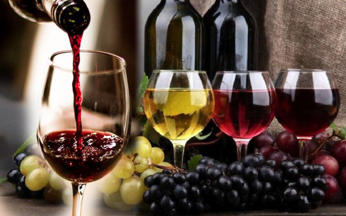
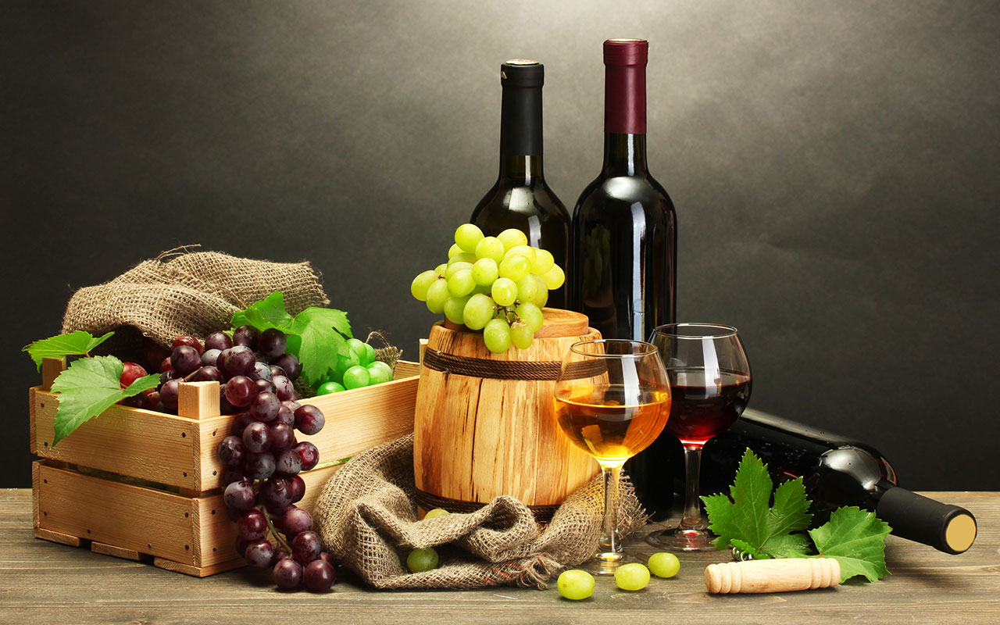

Rượu vang là một trong những thức uống được tiêu thụ nhiều hàng đầu Thế giới và có tuổi đời lên đến hàng nghìn năm. Kiến thức về rượu vang thì vô cùng vô tận nhưng để giới thiệu về rượu vang, bất cứ ai say mê loại đồ uống này cũng nên tìm hiểu các thông tin cơ bản sau đây
Rượu vang là gì? Rượu vang là đồ uống có cồn được lên men trực tiếp từ trái nho chín trong tự nhiên. Về mặt bản chất, chỉ có rượu được lên men từ trái nho mới được gọi là rượu vang nhưng ngày nay, người ta sáng tạo ra rất nhiều công thức đồ uống khác nhau nên một số thức uống được lên men từ các loại quả như táo, mận… cũng được gọi là vang.
Rượu vang tiếng Anh là gì? Khi tìm hiểu giới thiệu về rượu vang, chắc hẳn bạn sẽ thấy có rất nhiều tên gọi loại rượu vang nổi tiếng thế giới làm say đắm lòng người. Nhưng cốt lõi nhất nằm ở danh từ “wine” trải qua bao nhiêu năm không hề suy chuyển. Hiện nay, có nhiều biến thể của rượu vang cũng được công nhận, chẳng hạn như người Nhật gọi rượu được lên men từ trái mơ, mận của họ là “plum wine”…
Trong bất kì nguồn thông tin nào giới thiệu về rượu vang, chúng ta cũng nên tìm hiểu rượu vang xuất xứ từ đâu. Nguồn gốc của rượu vang chính thức bắt nguồn từ Trung Đông theo truyền thuyết Ba Tư huyền bí. Truyền thuyết kể rằng, xa xưa có 1 vị công chúa Ba Tư không được vua cha yêu mến nên đã cố quyên sinh bằng cách ăn thật nhiều những quả nho bị thối rữa. Nhưng sau khi ăn 1 lượng lớn, nàng bị say men nho và ngủ thiếp đi. Khi tỉnh dậy, tinh thần công chúa thay đổi hẳn, nàng thấy hưng phấn, thoải mái và yêu đời hơn nên được vua cha yêu quý. Sau đó, nhà vua đã cho lan truyền thức uống được lên men từ những trái nho “hỏng” và phổ biến cho tới tận ngày nay. Theo nhiều nghiên cứu khảo cổ cho thấy, tại các vùng đất trước kia là quốc gia Ai Cập cổ đại, Lưỡng Hà người ta tìm thấy những di tích, cổ vật ghi nhận quá trình sản xuất rượu vang thủ công, những hầm rượu vang chìm sâu trong lòng đất có niên đại lên tới hàng nghìn năm. Cùng với Trung Đông, một số quốc gia Tây Âu cũng được xác định là “cái nôi” của rượu vang thế giới như: Pháp, Hy Lạp. Người La Mã cổ có những đóng góp vô cùng quan trọng trong việc giới thiệu về rượu vang ra khắp Thế giới qua con đường tơ lụa nổi danh một thời.
Chất lượng rượu vang được quyết định bởi rất nhiều yếu tố, từ giống nho nguyên liệu, công thức lên men cho tới thời gian ủ rượu. Vì vậy, dựa vào tuổi của rượu vang cũng có thể đánh giá được phần nào độ ngon của rượu. Bạn có thể tìm hiểu tuổi của rượu vang trong phần giới thiệu về rượu vang in trên thân chai hoặc vỏ hộp rượu. Để đảm bảo hương vị thơm ngon của rượu vang có thể tăng lên theo thời gian bảo quản rượu, cần đảm bảo rất nhiều yếu tố kỹ thuật, đặc biệt là về nhiệt độ. Nhiệt độ lý tưởng nhất để bảo quản rượu vang là trong khoảng 5-18 độ C. Trong đó, vang đỏ là 15- 18 độ C; vang trắng là 12-15 độ C. Không phải tất cả các loại rượu vang đều cần ủ nhiều năm mới đạt được hương vị chuẩn. Thậm chí hiện nay có nhiều nhà sản xuất rượu vang ứng dụng công nghệ kỹ thuật hiện đại cho phép sản xuất ra những chai rượu vang uống được ngay khi sản xuất mà vẫn đảm bảo hương vị thơm ngon. Trong số các loại rượu vang, rượu vang đỏ chứa lượng tannin - chất chát lớn nên tuổi rượu vang càng cao - ủ càng lâu thì hương vị càng đậm đà, tuyệt hảo.